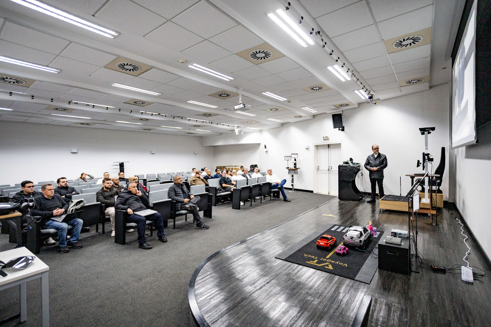
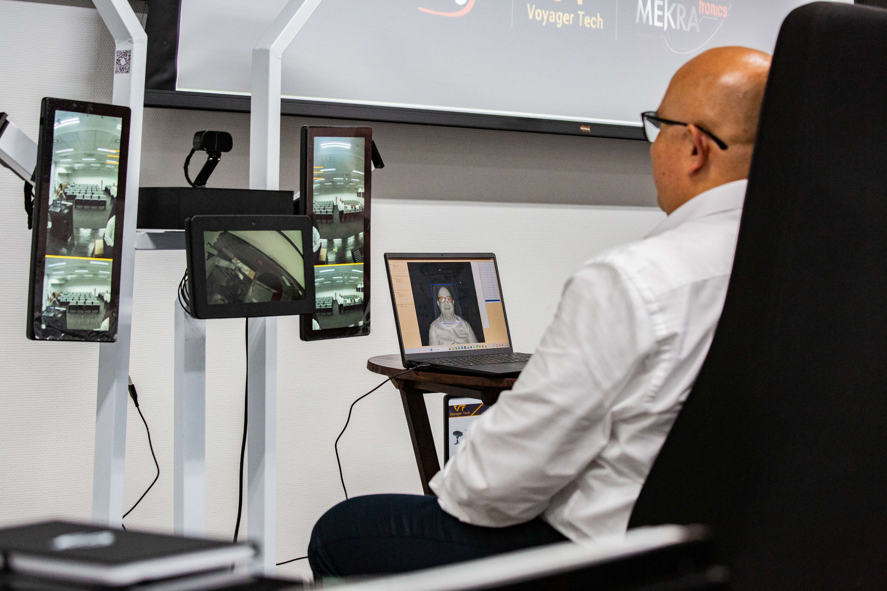
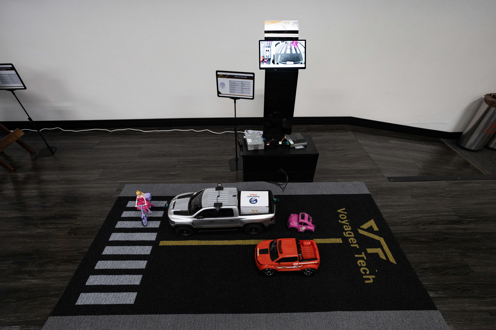
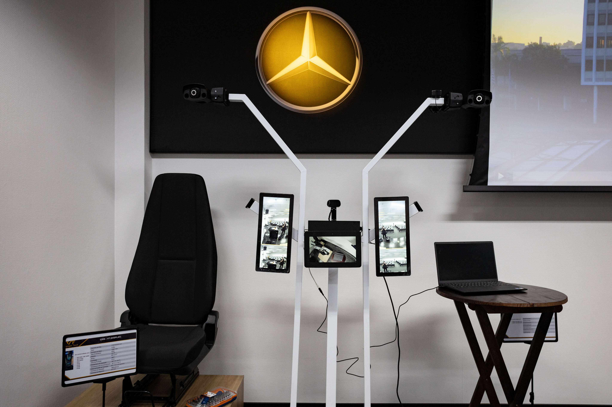
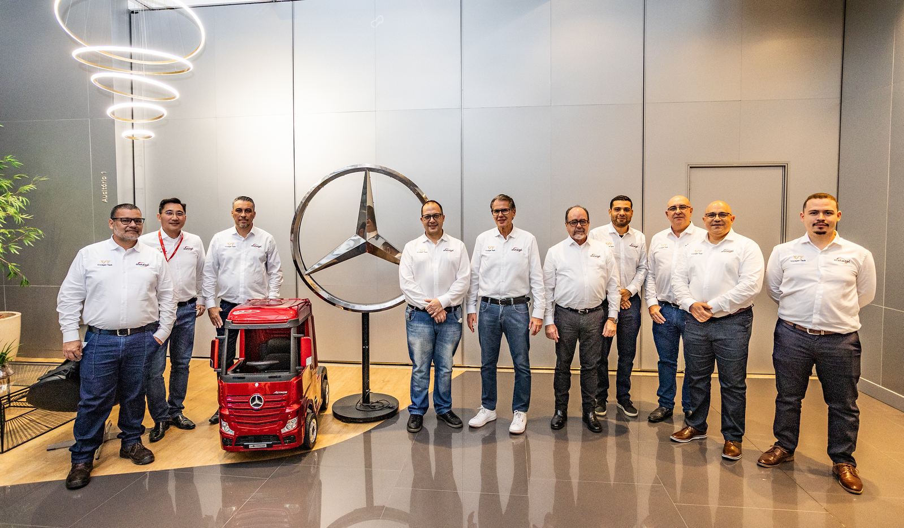

携手巴西本地战略伙伴梅克朗和Metagal ，寅家科技首次亮相巴西戴姆勒技术交流日，进一步深化集团在南美市场的布局，充分展现了集团在全球商用车智能化升级赛道中的强劲技术实力。

本次寅家科技集中展出全套成熟、可量产的商用车智能辅助驾驶解决方案。基于智能感知系统VT-Sensing、惯导定位VT-Navi和决策控制VT-Vulcan®等核心技术，带来最新的寅家电子外后视镜（VT-CMS）、寅家驾驶员监测（VT-DMS）、寅家全景泊车（VT-AVM）和寅家前视一体机（VT-FVC ADAS ）等技术方案。系列方案有能力满足南美商用车高安全标准，并针对高温、长续航、复杂路况做了本地化硬件与算法优化。
 

寅家科技与梅克朗自2024年建立全球战略合作关系，携手拓展高品质商用车智能解决方案业务，共同拓展全球商用车市场创新应用场景。2024年起，双方进一步深耕巴西本地化合作，并与当地Tier One Metagal Industria e Comércio携手，稳步推进市场深耕、技术对接与项目落地，为寅家科技深度开拓南美商用车市场筑牢坚实根基。
寅家科技在车载智能感知、智能决策与控制方面累积了十余年的丰富经验，在商用车领域也拥有模块化落地能力和成熟实践经验。2026年第一季度，寅家科技拿下奇瑞商用车项目定点。
寅家科技创始人兼首席执行官陈寅仁表示：“南美市场是寅家科技全球商用车业务布局的核心战略阵地。衷心感谢我们长期全球战略合作伙伴梅克朗，以及巴西本土一级供应商 Metagal 给予的鼎力支持与深度协同。依托双方共建的成熟本土化配套体系，我们可提供专属客户对接、应用工程开发、质保维保、备件供应与现场技术支持等全链条服务，稳步推进巴西市场开拓与技术落地。
本次亮相巴西戴姆勒技术交流日，绝非简单的单品陈列，而是一套完整解决方案的集中展示，涵盖三大板块：一是自研商用车视觉感知、决策与控制核心技术；二是本地化全周期配套服务、整车匹配应用工程经验；三是本土产业链协同、长期技术共创合作模式。我们具备高度灵活的定制化方案能力，可充分适配主机厂需求、区域本地化改造及行业未来法规趋势。
未来我们有信心以可靠的中国原创技术伙伴身份，持续输出高标准智能出行产品与本土化服务，助力全球商用车产业朝着智能化、高安全标准的方向升级迭代。”
